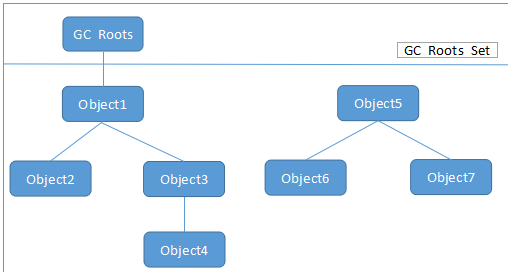

垃圾收集器¶
- 哪些内存需要回收
- 什么时候回收
- 如何回收
基础¶
输出GC日志参数
要查看GC日志，需要设置一下jvm的参数。关于输出GC日志的参数有以下几种
- -XX:+PrintGC 输出GC日志
- -XX:+PrintGCDetails 输出GC的详细日志
- -XX:+PrintGCTimeStamps 输出GC的时间戳（以基准时间的形式）
- -XX:+PrintGCDateStamps 输出GC的时间戳（以日期的形式，如 2013-05-04T21:53:59.234+0800）
- -XX:+PrintHeapAtGC 在进行GC的前后打印出堆的信息
- -Xloggc:../logs/gc.log 日志文件的输出路径
分析日志
- GC日志开头的”[GC”和”[Full GC”说明了这次垃圾收集的停顿类型，如果有”Full”，说明这次GC发生了”Stop-The-World”。因为是调用了System.gc()方法触发的收集，所以会显示”[Full GC (System.gc())”，不然是没有后面的(System.gc())的。
- “[PSYoungGen”和”[ParOldGen”是指GC发生的区域，分别代表使用Parallel Scavenge垃圾收集器的新生代和使用Parallel old垃圾收集器的老生代。为什么是这两个垃圾收集器组合呢？因为我的jvm开启的模式是Server，而Server模式的默认垃圾收集器组合便是这个，在命令行输入java -version就可以看到自己的jvm默认开启模式。还有一种是client模式，默认组合是Serial收集器和Serial Old收集器组合。
- 在方括号中”PSYoungGen:”后面的”3686K->664K(38400K)”代表的是”GC前该内存区域已使用的容量->GC后该内存区域已使用的容量(该内存区域总容量)”
- 在方括号之外的”3686K->672K(125952K)”代表的是”GC前Java堆已使用容量->GC后Java堆已使用容量(Java堆总容量)”
- 再往后的”0.0016607 sec”代表该内存区域GC所占用的时间，单位是秒。
- 再后面的”[Times: user=0.00 sys=0.00, real=0.00 secs]”，user代表进程在用户态消耗的CPU时间，sys代表代表进程在内核态消耗的CPU时间、real代表程序从开始到结束所用的时钟时间。这个时间包括其他进程使用的时间片和进程阻塞的时间（比如等待 I/O 完成）。
- 至于后面的”eden”代表的是Eden空间，还有”from”和”to”代表的是Survivor空间。
判断对象是否活着¶
1. 引用计数法
实现简单，判断效率高，在大部分情况下他都是一个不错的算法。但是主流的 JVM 没有选用引用计数法来管理内存，主要原因是他很难解决对象之间循环引用的问题
栗子
package me.wenchao.javabasic.gc;
/**
* @Author wenchaofu
* @DATE 15:40 2018/5/18
* @DESC
* -XX:+PrintGCDetails
*/
public class ReferenceCountingGC {
public Object instance = null;
private static final int _1MB = 1024*1024;
//占用内存，以便观察GC情况
private byte[] bigSize = new byte[2 * _1MB];
public static void testGC(){
ReferenceCountingGC objA = new ReferenceCountingGC();
ReferenceCountingGC objB = new ReferenceCountingGC();
objA.instance = objB;
objB.instance = objA;
objA = null;
objB = null;
System.gc();
System.out.println("gc over");
}
public static void main(String[] args) {
testGC();
}
}
返回结果
[GC (System.gc()) [PSYoungGen: 7083K->843K(28160K)] 7083K->851K(92672K), 0.0068615 secs] [Times: user=0.02 sys=0.01, real=0.01 secs]
[Full GC (System.gc()) [PSYoungGen: 843K->0K(28160K)] [ParOldGen: 8K->779K(64512K)] 851K->779K(92672K), [Metaspace: 3478K->3478K(1056768K)], 0.0292032 secs] [Times: user=0.08 sys=0.00, real=0.03 secs]
gc over
Heap
PSYoungGen total 28160K, used 737K [0x00000000e0b80000, 0x00000000e2a80000, 0x0000000100000000)
eden space 24576K, 3% used [0x00000000e0b80000,0x00000000e0c386a8,0x00000000e2380000)
from space 3584K, 0% used [0x00000000e2380000,0x00000000e2380000,0x00000000e2700000)
to space 3584K, 0% used [0x00000000e2700000,0x00000000e2700000,0x00000000e2a80000)
ParOldGen total 64512K, used 779K [0x00000000a2200000, 0x00000000a6100000, 0x00000000e0b80000)
object space 64512K, 1% used [0x00000000a2200000,0x00000000a22c2c78,0x00000000a6100000)
Metaspace used 3486K, capacity 4496K, committed 4864K, reserved 1056768K
class space used 383K, capacity 388K, committed 512K, reserved 1048576K
Process finished with exit code 0
根据 7083K->851K(92672K) 可以看出并没有因为两个对象相互引用而没有回收他们，也从侧面反映了JVM并不是通过引用计数法来判断对象是否存活的。
2. 可达性分析算法
在主流的商用程序语言中(Java和C#)，都是使用可达性分析算法判断对象是否存活的。这个算法的基本思路就是通过一系列名为”GC Roots”的对象作为起始点，从这些节点开始向下搜索，搜索所走过的路径称为引用链(Reference Chain)，当一个对象到GC Roots没有任何引用链相连时，则证明此对象是不可用的，下图对象object5, object6, object7虽然有互相判断，但它们到GC Roots是不可达的，所以它们将会判定为是可回收对象。
在Java语言里，可作为GC Roots对象的包括如下几种：
- 虚拟机栈(栈桢中的本地变量表)中的引用的对象
- 方法区中的类静态属性引用的对象
- 方法区中的常量引用的对象
- 本地方法栈中JNI的引用的对象
谈谈引用¶
具体参见我的博客 强引用，软引用，弱引用，幻想引用有什么区别，他们的使用场景是什么
对象生存还是死亡¶
即使在可达性分析算法中不可达的对象，也并非是“非死不可”的，这时候它们暂时处于“缓刑”阶段，要真正宣告一个对象死亡，至少要经历再次标记过程。
标记的前提是对象在进行可达性分析后发现没有与GC Roots相连接的引用链。
1).第一次标记并进行一次筛选。 筛选的条件是此对象是否有必要执行finalize()方法。 当对象没有覆盖finalize方法，或者finzlize方法已经被虚拟机调用过，虚拟机将这两种情况都视为“没有必要执行”，对象被回收。
2).第二次标记 如果这个对象被判定为有必要执行finalize（）方法，那么这个对象将会被放置在一个名为：F-Queue的队列之中，并在稍后由一条虚拟机自动建立的、低优先级的Finalizer线程去执行。这里所谓的“执行”是指虚拟机会触发这个方法，但并不承诺会等待它运行结束。这样做的原因是，如果一个对象finalize（）方法中执行缓慢，或者发生死循环（更极端的情况），将很可能会导致F-Queue队列中的其他对象永久处于等待状态，甚至导致整个内存回收系统崩溃。 Finalize（）方法是对象脱逃死亡命运的最后一次机会，稍后GC将对F-Queue中的对象进行第二次小规模标记，如果对象要在finalize（）中成功拯救自己—-只要重新与引用链上的任何的一个对象建立关联即可，譬如把自己赋值给某个类变量或对象的成员变量，那在第二次标记时它将移除出“即将回收”的集合。如果对象这时候还没逃脱，那基本上它就真的被回收了。

/**
* 此代码演示了两点：
* 1.对象可以在被GC时自我拯救。
* 2.这种自救的机会只有一次，因为一个对象的finalize()方法最多只会被系统自动调用一次
* @author zzm
*/
public class FinalizeEscapeGC {
public static FinalizeEscapeGC SAVE_HOOK = null;
public void isAlive() {
System.out.println("yes, i am still alive :)");
}
@Override
protected void finalize() throws Throwable {
super.finalize();
System.out.println("finalize mehtod executed!");
FinalizeEscapeGC.SAVE_HOOK = this;
}
public static void main(String[] args) throws Throwable {
SAVE_HOOK = new FinalizeEscapeGC();
//对象第一次成功拯救自己
SAVE_HOOK = null;
System.gc();
// 因为Finalizer方法优先级很低，暂停0.5秒，以等待它
Thread.sleep(500);
if (SAVE_HOOK != null) {
SAVE_HOOK.isAlive();
} else {
System.out.println("no, i am dead :(");
}
// 下面这段代码与上面的完全相同，但是这次自救却失败了
SAVE_HOOK = null;
System.gc();
// 因为Finalizer方法优先级很低，暂停0.5秒，以等待它
Thread.sleep(500);
if (SAVE_HOOK != null) {
SAVE_HOOK.isAlive();
} else {
System.out.println("no, i am dead :(");
}
}
}
运行结果
finalize method executed!
yew, I am still alive
no ,I am dead QAQ!
从结果可以看出，SAVE_HOOK对象的finalize()方法确实被GC收集器触发过，并且在被收集前成功逃脱了。 注意：任何一个对象的finalize()方法都只会被系统自动调用一次，如果对象面临下一次回收，它的finalize()方法不会被再次执行，因此第二段代码的自救行动失败了。 并且建议大家尽量避免使用它
回收方法区¶
略